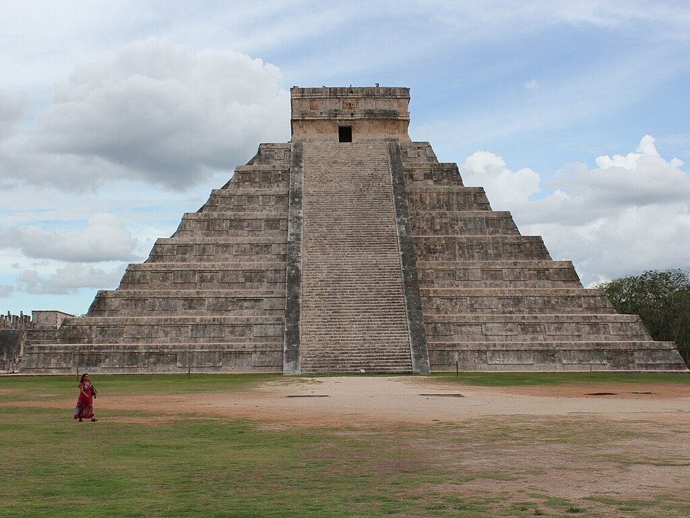
Hier stehen die wichtigsten Daten zu deinem Land. In der App baust du daraus deinen eigenen Steckbrief.
| Hauptstadt | Mexiko-Stadt |
| Kontinent | Nordamerika |
| Sprache | Spanisch, dazu viele indigene Sprachen |
| Währung | Mexikanischer Peso |
| Einwohner | rund 130 Millionen Menschen |
| Fläche | fast 2 Millionen km², also ungefähr fünfmal so groß wie Deutschland |
| Großer Berg | Pico de Orizaba (Citlaltépetl), 5.636 Meter hoch |
| Nachbarländer | USA, Guatemala und Belize |
In Mexiko gibt es viele berühmte Orte. Diese vier solltest du kennen.
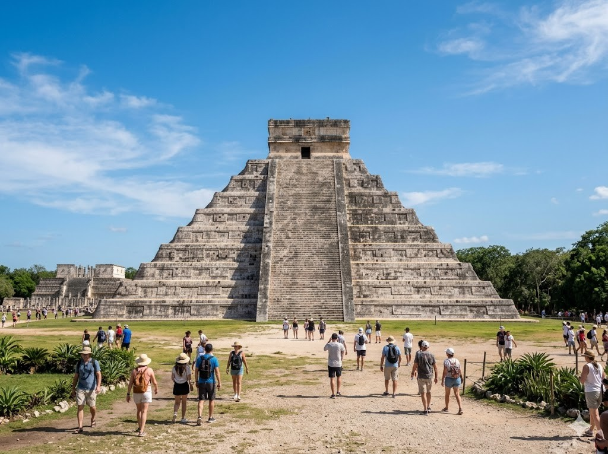
Chichén ItzáChichén Itzá ist eine alte Stadt der Maya in Mexiko. Mitten darin steht eine große Pyramide aus Stein. Sie hat 365 Stufen, so viele wie ein Jahr Tage hat. Heute besuchen viele Menschen diesen berühmten Ort.
Grüne Wörter für die Appder Mayagroße Pyramideaus Stein365 Stufenberühmten Ort
Pyramiden von TeotihuacánTeotihuacán ist eine sehr alte Stadt in der Nähe von Mexiko-Stadt. Dort stehen zwei riesige Pyramiden, die Sonnenpyramide und die Mondpyramide. Sie wurden vor vielen hundert Jahren gebaut. Man kann die Stufen hinaufsteigen und weit über das Land schauen.
Grüne Wörter für die Appsehr altezwei riesigedie Sonnenpyramidehinaufsteigenüber das Land
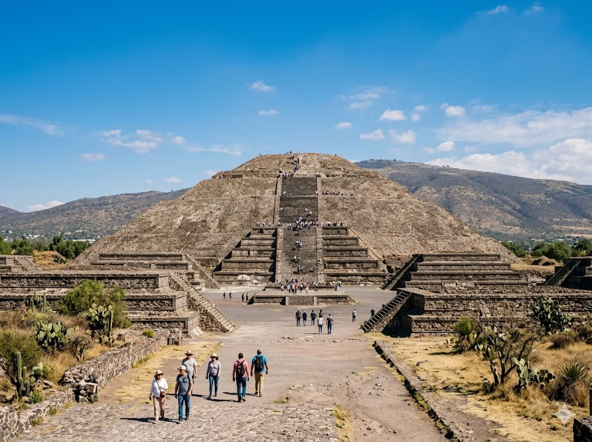
Strände von CancúnCancún liegt am warmen Meer im Osten von Mexiko. Dort gibt es lange Strände mit feinem weißen Sand. Das Wasser ist klar und türkisblau. Viele Urlauber baden hier und liegen in der Sonne.
Grüne Wörter für die Appam warmenlange Strändeweißen SandtürkisblauViele Urlauber
GuanajuatoGuanajuato ist eine bunte Stadt in den Bergen von Mexiko. Die Häuser sind in vielen leuchtenden Farben gestrichen. Enge Gassen führen den Berg hinauf und hinunter. Früher wurde hier in Minen nach Silber gegraben.
Grüne Wörter für die Appbunte Stadtden Bergenleuchtenden FarbenEnge Gassennach Silber
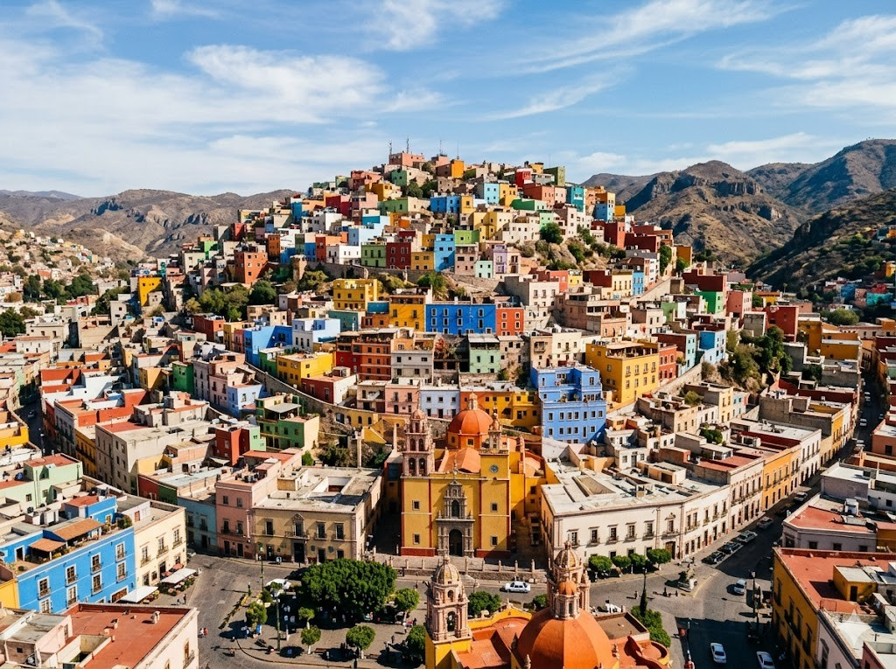
Diese Tiere leben in Mexiko und sind ganz besonders.
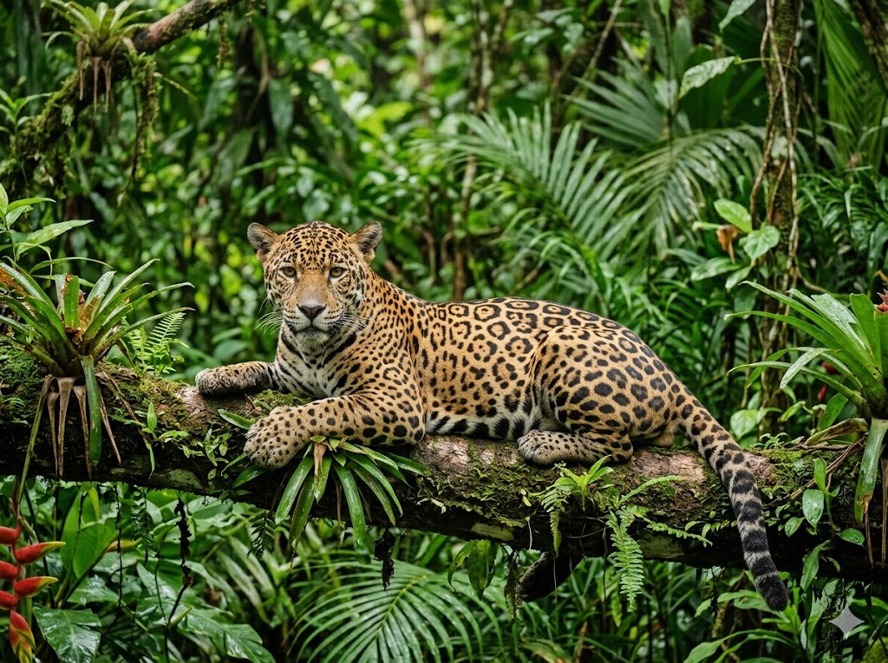
JaguarDer Jaguar ist die größte Raubkatze in ganz Amerika. Er lebt im dichten Regenwald von Mexiko. Sein Fell hat ein schönes Muster aus dunklen Flecken. Der Jaguar ist ein guter Schwimmer und jagt am liebsten allein.
Grüne Wörter für die Appgrößte Raubkatzeim dichtendunklen Fleckenguter Schwimmerjagt am liebsten
AxolotlDer Axolotl ist ein kleiner Salamander, der im Wasser lebt. Er kommt nur in Mexiko vor und sieht aus, als ob er lächelt. Wenn er ein Bein verliert, kann ihm ein neues nachwachsen. In freier Natur ist der Axolotl leider stark bedroht.
Grüne Wörter für die Appkleiner Salamanderim Wassernur in Mexikonachwachsenstark bedroht
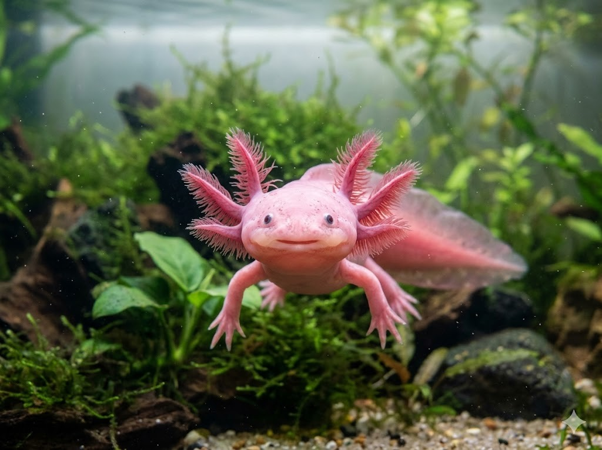
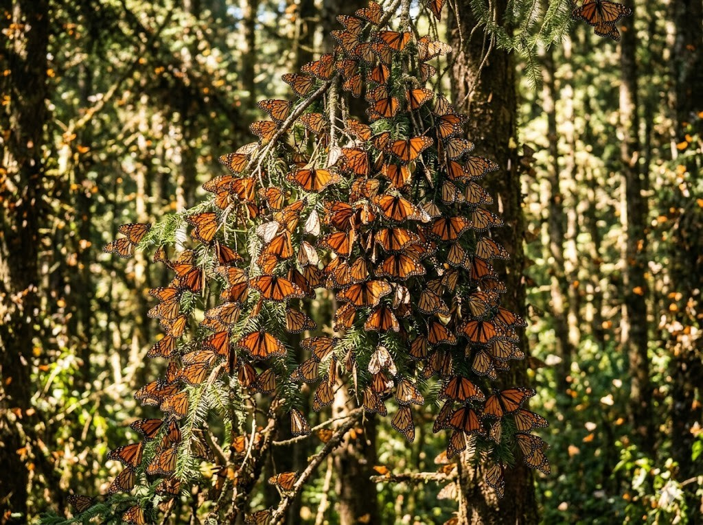
MonarchfalterDer Monarchfalter ist ein orange-schwarzer Schmetterling. Jeden Herbst fliegt er Tausende Kilometer bis nach Mexiko. Dort überwintert er in den Bergen auf großen Bäumen. Millionen Falter sitzen dann dicht zusammen an den Ästen.
Grüne Wörter für die Apporange-schwarzer SchmetterlingTausende Kilometerüberwintert ergroßen BäumenMillionen Falter
In der App kannst du beim Essen das Foto nehmen oder dein Gericht selbst malen.
TacosTacos sind ein beliebtes Essen in Mexiko. Man nimmt dafür einen kleinen Fladen aus Maismehl. Er wird mit Fleisch, Bohnen oder Gemüse gefüllt. Dann klappt man den Fladen zusammen und isst ihn mit der Hand.
Grüne Wörter für die Appbeliebtes Essenkleinen Fladenaus Maismehloder Gemüsemit der Hand
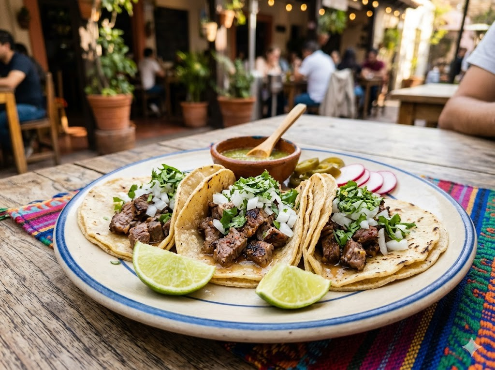
GuacamoleGuacamole ist ein grüner Brei aus reifen Avocados. Dazu kommen etwas Salz, Limette und manchmal Zwiebeln. Die Mexikaner essen die Guacamole sehr gern. Man tunkt knusprige Chips hinein oder streicht sie auf einen Fladen.
Grüne Wörter für die Appgrüner Breireifen AvocadosLimettesehr gernknusprige Chips
QuesadillaEine Quesadilla ist ein Fladen mit Käse darin. Der Käse wird in der Pfanne warm und schmilzt. Dann wird der Fladen zusammengeklappt und in Stücke geschnitten. Quesadillas schmecken warm am besten.
Grüne Wörter für die Appmit Käsein der Pfanneschmilztzusammengeklapptwarm am besten
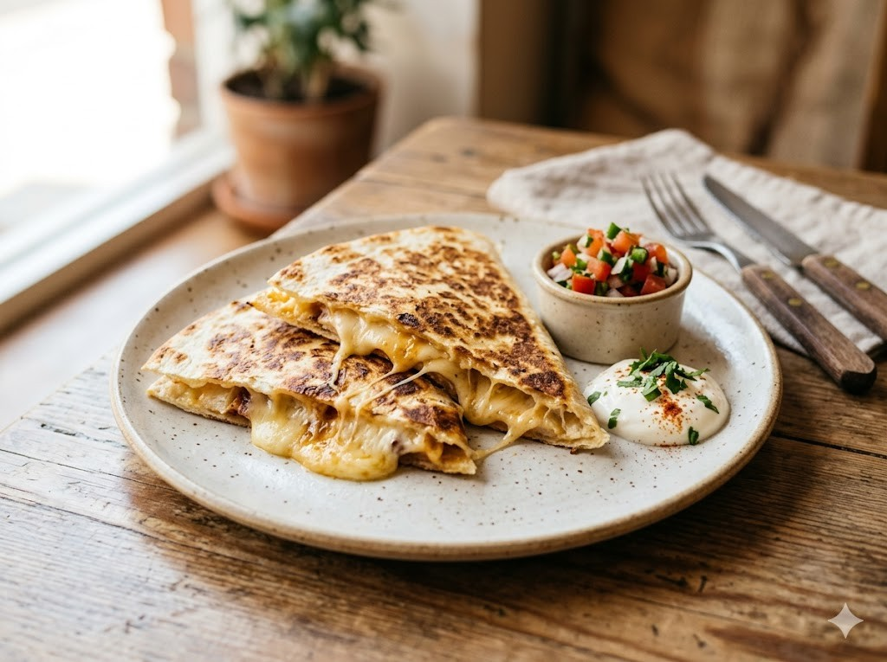
⚽ Gut zu wissen
Die Fußballmannschaft von Mexiko hat den Spitznamen El Tri. Das kommt von den drei Farben Grün, Weiß und Rot auf der Flagge. Die Spieler tragen meistens ein grünes Trikot. Mexiko ist sehr oft bei der Weltmeisterschaft dabei. Im Jahr 2026 ist das Land sogar Gastgeber, zusammen mit den USA und Kanada.
Grüne Wörter für die AppEl Tridrei Farbengrünes Trikotder WeltmeisterschaftGastgeber
🌟 Profi-Wissen
Mexiko ist einer der Co-Gastgeber der WM 2026. Der bekannteste Torwart Mexikos heißt Guillermo Ochoa. Er ist berühmt für sehr viele gehaltene Schüsse. Ein bekannter Stürmer ist Chicharito. Die Nationalmannschaft heißt El Tri.
Grüne Wörter für die AppGuillermo OchoaTorwart-LegendeChicharitoCo-Gastgeber 2026El Tri
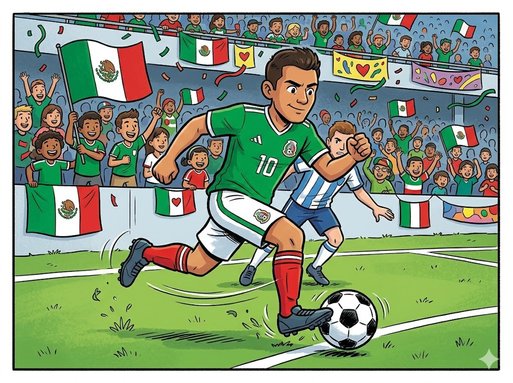
Schule in MexikoIn Mexiko gehen die Kinder meistens am Morgen zur Schule. Viele tragen eine Schuluniform mit gleichen Farben. Am Anfang der Woche stellen sich alle zusammen auf dem Schulhof auf. Sie lernen Lesen, Schreiben und Rechnen wie bei uns.
Grüne Wörter für die Appam Morgeneine Schuluniformder Wochedem Schulhofund Rechnen
Tag der TotenDer Tag der Toten ist ein fröhliches Fest in Mexiko. Die Familien denken dabei an Menschen, die gestorben sind. Sie schmücken alles mit orangen Ringelblumen und bunten Zuckertotenköpfen. Überall wird gesungen, gegessen und gelacht.
Grüne Wörter für die Appfröhliches FestDie Familienorangen Ringelblumenbunten Zuckertotenköpfengesungen
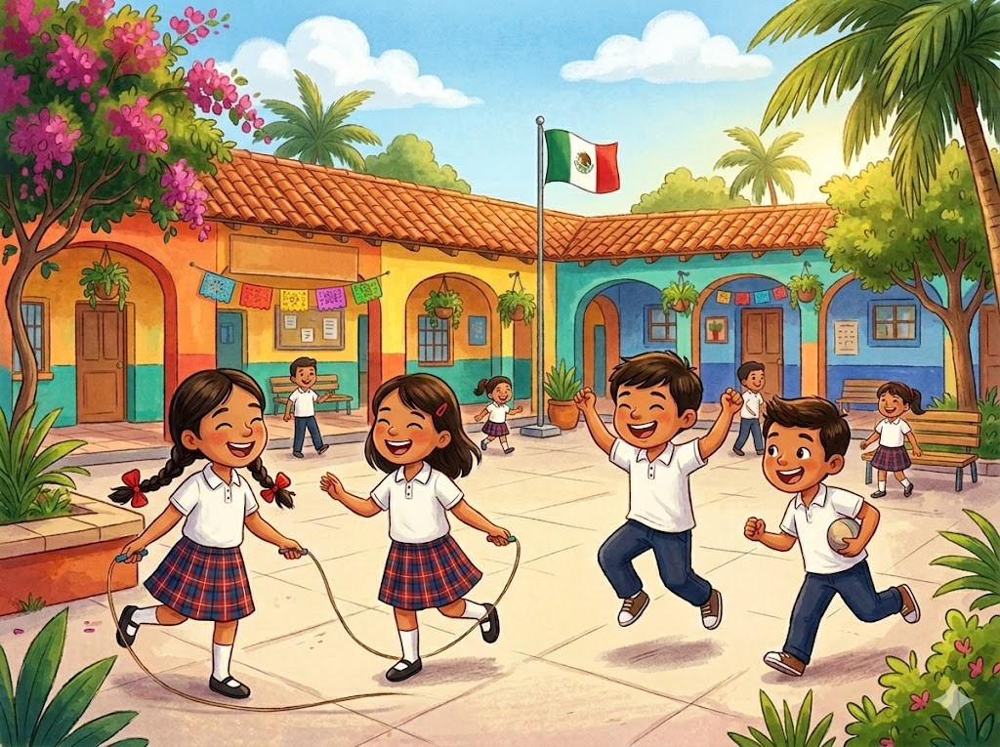